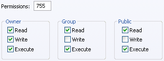

Step 3 - (CHMOD) Setting File Permissions (Alternative Settings)
After you have completed the section of this guide titled "Step 2 - Uploading," you must now set the file permissions on the files listed in the table below. Since this is a Linux/*nix function, Windows server users will not be able to do this. On a Windows Server, running IIS, you will need to give the data folders (those specified to be CHMOD 755) full read/write permissions. Code folders will need Read, Execution Permissions - Scripts Only. On Windows/IIS servers, you will probably need to contact your web host's support department and request that these permissions be set for you. There is one exception to Inheritance on IIS - Paths.pm must be set to Write. Windows/Apache servers do not use file permissions in this sense, you will not need to try to set them. Windows/Apache is driven by Apache directives/.htaccess.
Note: on *nix servers, if you find that these settings are the ones that work, you should notify your host - CHMOD 777 & 666 are highly insecure and not recommended. It also indicates there may be a misconfiguration of your web server which should be investigated.
Return to the page with the Default CHMOD Settings.
------- NON cgi-bin section ---------
- drwxr-xr-x (CHMOD 755) public_html/yabbfiles
- -rw-r--r-- (CHMOD 644) (in ASCII) public_html/yabbfiles/*.js
- -rw-r--r-- (CHMOD 644) (in Binary) public_html/yabbfiles/*.swf
- drwxrwxrwx (CHMOD 777) public_html/yabbfiles/Attachments
- drwxrwxrwx (CHMOD 777) public_html/yabbfiles/avatars
- -rw-r--r-- (CHMOD 644) (in Binary) public_html/yabbfiles/avatars/* (all files)
- drwxrwxrwx (CHMOD 777) public_html/yabbfiles/avatars/UserAvatars
- -rw-rw-rw- (CHMOD 666) (in Binary) public_html/yabbfiles/avatars/UserAvatars/* (all other files if exist)
- drwxr-xr-x (CHMOD 755) public_html/yabbfiles/Bookmarks
- drwxr-xr-x (CHMOD 755) public_html/yabbfiles/Buttons
- drwxr-xr-x (CHMOD 755) public_html/yabbfiles/EventIcons
- drwxr-xr-x (CHMOD 755) public_html/yabbfiles/googiespell
- -rw-r--r-- (CHMOD 644) (in Binary) public_html/yabbfiles/googiespell/* (6 graphic files: 5 .gif, 1 .png)
- -rw-r--r-- (CHMOD 644) (in ASCII) public_html/yabbfiles/googiespell/* (3 .js files, 1 .css file and the GPL.txt)
- drwxr-xr-x (CHMOD 755) public_html/yabbfiles/greybox
- -rw-r--r-- (CHMOD 644) (in Binary) public_html/yabbfiles/greybox/* (6 graphic files: 6 .gif)
- -rw-r--r-- (CHMOD 644) (in ASCII) public_html/yabbfiles/greybox/* (1 .js file, 1 .html file and 1 .css file)
- drwxr-xr-x (CHMOD 755) public_html/yabbfiles/ModImages
- drwxr-xr-x (CHMOD 755) public_html/yabbfiles/shjs
- -rwxr-xr-x (CHMOD 755) (in ASCII) public_html/yabbfiles/shjs/* (10 .js files)
- -rw-rw-rw- (CHMOD 666) (in ASCII) public_html/yabbfiles/shjs/styles/* (1 .css file)
- drwxr-xr-x (CHMOD 755) public_html/yabbfiles/Smilies
- -rw-r--r-- (CHMOD 644) (in Binary) public_html/yabbfiles/Smilies/* (all files)
- drwxr-xr-x (CHMOD 755) public_html/yabbfiles/Templates
- drwxr-xr-x (CHMOD 755) public_html/yabbfiles/Templates/Admin
- -rw-r--r-- (CHMOD 644) (in ASCII) public_html/yabbfiles/Templates/Admin/default.css
- drwxr-xr-x (CHMOD 755) public_html/yabbfiles/Templates/Admin/default
- -rw-r--r-- (CHMOD 644) (in Binary) public_html/yabbfiles/Templates/Admin/default/* (all files)
- drwxr-xr-x (CHMOD 755) public_html/yabbfiles/Templates/Forum
- -rw-rw-rw- (CHMOD 666) (in ASCII) public_html/yabbfiles/Templates/Forum/default.css
- drwxr-xr-x (CHMOD 755) public_html/yabbfiles/Templates/Forum/default
- -rw-r--r-- (CHMOD 644) (in Binary) public_html/yabbfiles/Templates/Forum/default/* (all files)
- drwxr-xr-x (CHMOD 755) public_html/yabbfiles/UBBCbuttons
- -rw-r--r-- (CHMOD 644) (in Binary) public_html/yabbfiles/UBBCbuttons/* (all files)
------- CGI-BIN section (Transfer all files in ASCII) ---------
All index.html and .htaccess files in the following folders
can be set to -rw-r--r-- (CHMOD 644) for security reasons!
- drwxr-xr-x (CHMOD 755) cgi-bin/yabb2
- -rwxr-xr-x (CHMOD 755) cgi-bin/yabb2/AdminIndex.pl
- -rwxr-xr-x (CHMOD 755) cgi-bin/yabb2/Convert.pl
- -rwxr-xr-x (CHMOD 755) cgi-bin/yabb2/FixFile.pl
- -rwxrwxrwx (CHMOD 777) cgi-bin/yabb2/Paths.pm
- -rwxr-xr-x (CHMOD 755) cgi-bin/yabb2/Setup.pl
- -rwxr-xr-x (CHMOD 755) cgi-bin/yabb2/YaBB.pl
- drwxr-xr-x (CHMOD 755) cgi-bin/yabb2/Admin
- -rw-r--r-- (CHMOD 644) cgi-bin/yabb2/Admin/* (all files)
- drwxrwxrwx (CHMOD 777) cgi-bin/yabb2/Backups
- -rw-rw-rw- (CHMOD 666) cgi-bin/yabb2/Backups/* (all files)
- drwxrwxrwx (CHMOD 777) cgi-bin/yabb2/Boards
- -rw-rw-rw- (CHMOD 666) cgi-bin/yabb2/Boards/* (all files)
- drwxr-xr-x (CHMOD 755) cgi-bin/yabb2/Convert
- drwxr-xr-x (CHMOD 755) cgi-bin/yabb2/Convert/Boards
- drwxr-xr-x (CHMOD 755) cgi-bin/yabb2/Convert/Members
- drwxr-xr-x (CHMOD 755) cgi-bin/yabb2/Convert/Messages
- drwxr-xr-x (CHMOD 755) cgi-bin/yabb2/Convert/Variables
- drwxr-xr-x (CHMOD 755) cgi-bin/yabb2/Help/English/Admin
- -rw-rw-rw- (CHMOD 666) cgi-bin/yabb2/Help/English/Admin/* (all files)
- drwxr-xr-x (CHMOD 755) cgi-bin/yabb2/Help/English/Gmod
- -rw-rw-rw- (CHMOD 666) cgi-bin/yabb2/Help/English/Gmod/* (all files)
- drwxr-xr-x (CHMOD 755) cgi-bin/yabb2/Help/English/Moderator
- -rw-rw-rw- (CHMOD 666) cgi-bin/yabb2/Help/English/Moderator/* (all files)
- drwxr-xr-x (CHMOD 755) cgi-bin/yabb2/Help/English/User
- -rw-rw-rw- (CHMOD 666) cgi-bin/yabb2/Help/English/User/* (all files)
- drwxr-xr-x (CHMOD 755) cgi-bin/yabb2/Languages/English
- -rw-rw-rw- (CHMOD 666) cgi-bin/yabb2/Languages/English/* (all files)
- drwxrwxrwx (CHMOD 777) cgi-bin/yabb2/Members
- -rw-rw-rw- (CHMOD 666) cgi-bin/yabb2/Members/* (all files)
- drwxrwxrwx (CHMOD 777) cgi-bin/yabb2/Messages
- -rw-rw-rw- (CHMOD 666) cgi-bin/yabb2/Messages/* (all files)
- drwxr-xr-x (CHMOD 755) cgi-bin/yabb2/Modules
- -rw-r--r-- (CHMOD 644) cgi-bin/yabb2/Modules/* (all files)
- drwxr-xr-x (CHMOD 755) cgi-bin/yabb2/Modules/Archive
- -rw-r--r-- (CHMOD 644) cgi-bin/yabb2/Modules/Archive/* (all files)
- drwxr-xr-x (CHMOD 755) cgi-bin/yabb2/Modules/Archive/Tar
- -rw-r--r-- (CHMOD 644) cgi-bin/yabb2/Modules/Archive/Tar/* (all files)
- drwxr-xr-x (CHMOD 755) cgi-bin/yabb2/Modules/Archive/Zip
- -rw-r--r-- (CHMOD 644) cgi-bin/yabb2/Modules/Archive/Zip/* (all files)
- drwxr-xr-x (CHMOD 755) cgi-bin/yabb2/Modules/Digest
- -rw-r--r-- (CHMOD 644) cgi-bin/yabb2/Modules/Digest/* (all files)
- drwxr-xr-x (CHMOD 755) cgi-bin/yabb2/Modules/Email
- drwxr-xr-x (CHMOD 755) cgi-bin/yabb2/Modules/Email/Date
- -rw-r--r-- (CHMOD 644) cgi-bin/yabb2/Modules/Email/Date/* (all files)
- drwxr-xr-x (CHMOD 755) cgi-bin/yabb2/Modules/MIME
- -rw-r--r-- (CHMOD 644) cgi-bin/yabb2/Modules/MIME/* (all files)
- drwxr-xr-x (CHMOD 755) cgi-bin/yabb2/Sources
- -rwxr-xr-x (CHMOD 755) cgi-bin/yabb2/Sources/SpellChecker.pl
- -rw-r--r-- (CHMOD 644) cgi-bin/yabb2/Sources/* (all other files)
- drwxr-xr-x (CHMOD 755) cgi-bin/yabb2/Templates
- drwxr-xr-x (CHMOD 755) cgi-bin/yabb2/Templates/default
- -rw-rw-rw- (CHMOD 666) cgi-bin/yabb2/Templates/default/* (all files)
- drwxrwxrwx (CHMOD 777) cgi-bin/yabb2/Variables
- -rw-rw-rw- (CHMOD 666) cgi-bin/yabb2/Variables/* (all files)